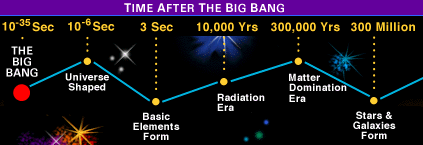
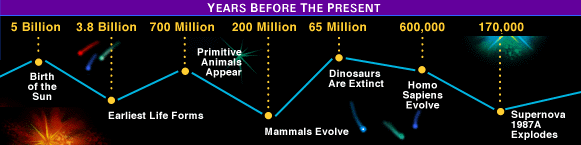
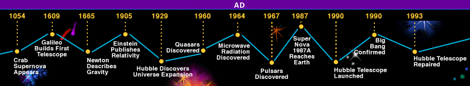
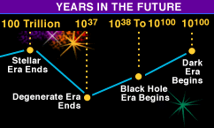

<<Back
The
Time Scheme...
This page gives a brief overview of how our universe evolved, how it took
its present form and where it is expected to go in the near future.

According to the most convincing theory the evolution of our universe
starts with the Big Bang. That can also be regarded as the beginning of time. It
mainly comprised of photons and some other exotic particles at that time. The
universe took shape almost instantly. This period between the Big Bang and the
Universe's taking shape is not yet understood. The radiations dominated the era
but as they damped and faded out the oncoming era was dominated by matter. The
formation of the Galaxies and the Stars followed.

Soon after this the Cosmic Dust started coagulating leading to the
formation of the stars. It was roughly around this time that our Sun came into
being followed by our Solar System.
The Earth cooled down and the first of the life forms evolved. The life
forms slowly developed and took there present shape.

This is the time when the interest in astronomy had started building up
amongst the commonfold. The Supernova Explosion took place leading to the
formation of the famous Crab Nebula. After Einstien's theory of Relativity many
revolutionary discoveries took place like the CMB (Cosmic Microwave Background)
Radiations, Pulsars and Quasars. These discoveries futher enhanced the faith in
the Theory of Cosmos confirmed in 1990.
In the same year the Hubble Space Telescope was launched which is a great
landmark in the history of Astronomy.

Based on the present data and the idea of universe, the future of the
same has been proposed, as can be seen by the image. It is yet to be verified.
Click
here
to see the full image of how our universe has been and is supposed to behave in
the near future.